The feel
Vaporwave takes the background music and pictures of commerce and plays them back slightly wrong. A typical release presents itself as mood music for an infomercial, a menu screen, an in-flight safety video or a drinks reception in the lobby,1 and Vektroid, the producer behind Floral Shoppe, wanted to take that familiarity and leave it "just slightly out of place".1
Nobody is quite sure how sincere it is. Adam Harper asked whether it was a critique of capitalism or a capitulation to it, and answered "Both and neither".1 Its designs "are like posters that promise the bubble hasn't burst, thrust in front of the eyes of those who know it definitely has".2 Under the bright surface sits a longing for a moment when the promises of technology and global connection still seemed believable.3
- slowed
- glossy
- hollow
- sedated
- second-hand
- half-joking
Where it comes from
Chuck Person's Eccojams Vol. 1 (2010), by Daniel Lopatin, set the template: loop a segment of a song you like, slow it down and add echo.4 James Ferraro first planned Far Side Virtual (2011) as 16 ringtones to download to your phone,5 and Macintosh Plus's Floral Shoppe (2011) slowed down Diana Ross's It's Your Move under a cover of a Helios bust on a pink and black tiled floor, parodied endlessly since.3,2 The name plays on vaporware, a product announced to the public that never arrives,1 and the scene grew through Tumblr, Turntable.fm, SoundCloud and Bandcamp, then Reddit and 4chan.2,6
Core elements
Classical busts among unrelated objects
Floral Shoppe sets a bust of Helios against hot pink, on a black and pink tiled floor that stretches into infinity.3 Roman statues and Doric columns recur, nearly always beside other, seemingly random objects, and that jumble keeps the scene from belonging to any particular place.7
Empty plazas
The setting is the plaza: the office lobby, the hotel reception and above all the shopping mall.1 Malls appear as perfect, empty spaces of glistening marble and white staircases that seem to rise to infinity.7,6
Obsolete technology
The technology is always out of date: VHS, cassettes, the original PlayStation, the Game Boy and Windows 95, glitches and all.3 When games appear, they are vintage systems such as the Game Boy or Sega Saturn, never current consoles, chosen for the nostalgia they give off.7
Pink and teal gradients with palms
Its music videos run on gradients of soothing pink and teal, with palm trees, skyscrapers and pyramids as yuppie emblems.2 Covers favour pastels,6 and the beaches and palms offer an escape that is itself packaged and sold.7
Capitals and Japanese lettering
Artist names and track titles are almost all bold capitals, often in Chinese or Japanese characters that most Western viewers can't read, and the word for its style is often spelled in full-width letters: ＡＥＳＴＨＥＴＩＣＳ.2 Lucy March reads the Japanese text as a memory of Japan's boom in the 1980s and 1990s, which ended in a "lost decade" of stagnation.8
Slowed, pitched-down loops
Samples come from New Age, smooth jazz, Muzak, advertising jingles and the menu music of old instructional videos.6 Looping, reverb and pitching down are the usual treatments,6 and a track will often loop out of sync, past the point where the music still does its job.1
How to do it
Cut out a statue
Cut a statue out of a photo with a selection tool and paste it onto a new 2000 by 2000 px canvas at 300 dpi.9 In 3D, Paradise Killer's team kitbashed its god statues out of different parts from ready-made marketplace assets.10
Add a gradient and a grid
Fill the background with a linear gradient at 90°, from #41b7f3 to #e765ad, and tint the statue with the same gradient in Color blend mode at 50% opacity. For the grid, repeat a 10 by 2000 px bar every 105 px, merge it with a copy turned 90°, and set it to Soft Light at 30%.9
Offset the colour channels
Duplicate the statue twice, switch off the red and blue channels on one copy and the green and blue on the other, and nudge them apart for a colour shift. Merge everything and finish with 10% Gaussian noise.9
Frame the art in Windows 95 windows
Koc describes one piece as a series of Windows 95 windows on a hot pink screen, every tab titled "IS THIS ART?".3 For web or game UI, copy the old controls closely: a standard Windows 98 button is 75 by 23 px, with a raised outer and inner border that turns sunken when pressed.11
Set the type
Set the title in VCR Mono at 34 px, the artist in Arial Italic at 14 px, and repeated lines in Arial at 15 px with tracking at 250.9 For wide letters, map ASCII (U+0021 to U+007E) to Unicode's fullwidth forms in the FFxx block, kept for compatibility with East Asian double-byte encodings.12
Slow down the samples
Lopatin made the first eccojams by looping a segment, slowing it down and adding a lot of echo.4 Change speed and pitch together, not tempo alone, so the pitch falls with the speed: a speed of 0.8 plays 20% slower, and 0.5 drops a full octave.13
Borrow colour and UI from album covers
Paradise Killer took palm trees, sparkling ocean waves and dreamy beach scenes from city pop album covers into its colour and its clean, bright UI.10 The 3D artist Rachel Noy helped sort out its lighting values, post-processing and a crystal shader for the big religious statues.10
Cheat sheet
- Canvas
- 2000 x 2000 px at 300 dpi9
- Gradient
- #41B7F3 to #E765AD, linear, 90°9
- Grid
- 10 px bars every 105 px, Soft Light at 30%9
- Statue tint
- Same gradient, Color blend, 50%9
- Type
- VCR Mono 34 px titles, Arial Italic 14 px names9
- Lettering
- Bold capitals, full-width Latin, Japanese2
- Window chrome
- 75 x 23 px buttons, raised outer and inner border11
- Audio
- Speed and pitch together: 0.8 is 20% slower, 0.5 an octave down13
Do
- Put the statue beside things that don't belong with it. The haphazard mix is what makes the scene placeless, like a life spent largely online.7
- Use technology that is properly out of date: VHS, cassettes, the Game Boy, Windows 95.3
- Break the polish now and then. Even at its most deadpan, vaporwave drops in a glitch or a pitch bend to jolt the listener out of complacency.1
- Embrace ugly design: stretched fonts, screensaver graphics and marbled 3D shapes.2
Avoid
- Mixing it up with synthwave, which looks back fondly on the 1980s over high-energy beats. Vaporwave satirises consumer culture and slows its samples right down.14
- Japanese text and Asian women as pure decoration. Critics have called it cultural appropriation,2 and scholars read it as techno-Orientalism that reinforces stereotypes.8
- Copying the Floral Shoppe cover. It has been parodied endlessly, and its creator, Ramona Andra Xavier, is rarely credited.2
- Wearing it as a cheap aesthetic. Vaporwave criticises the superficiality of capitalism, and Paradise Killer's creative director made sure some of that reached the game.10
Tools and tutorials
- 98.css
A CSS library for building interfaces that look like Windows 98.11 Read it for the pixel rules.
- How to Make a Vaporwave Album Cover in Photoshop
Envato Tuts+ walks through the statue, gradient, grid, channel shift and type used in the how-to above.9
- Audacity
Free audio editor. Change Speed and Pitch lowers the pitch as it slows the audio.13
- Blender
Free 3D suite for checker floors, columns and flat-lit renders.
- Halfwidth and Fullwidth Forms
The Unicode block of fullwidth forms behind ＡＥＳＴＨＥＴＩＣ text, with the code points.12
Palette
Pink, mint, black and marble are sampled from the Floral Shoppe cover. Violet and cyan are the Blank Banshee 0 gradient. Sky and navy come from Broken Reality.
Feel the vibe
Listen
Mathematics, from Floral Shoppe, an album of "chopped, glitching and screwed adult contemporary soul alongside twinkling spa promotional tunes".1
YouTubeFrom the 2010 tape that set the template: a segment of a song, looped, slowed and given a lot of echo.4
YouTubeFrom Blank Banshee 0 (2012), which brought vaportrap to prominence: vaporwave sampling over trap beats and layered synths.4
YouTubeA long drift for an empty city at night. From Birth of a New Day, whose cover shows a city fogged until it is barely there.7
YouTubeFrom the Paradise Killer soundtrack, which mixes vaporwave with funk, jazz fusion and early Japanese game music.10
YouTubeFrom Far Side Virtual, which Ferraro first planned as 16 ringtones you could download to your phone.5
YouTube
More references
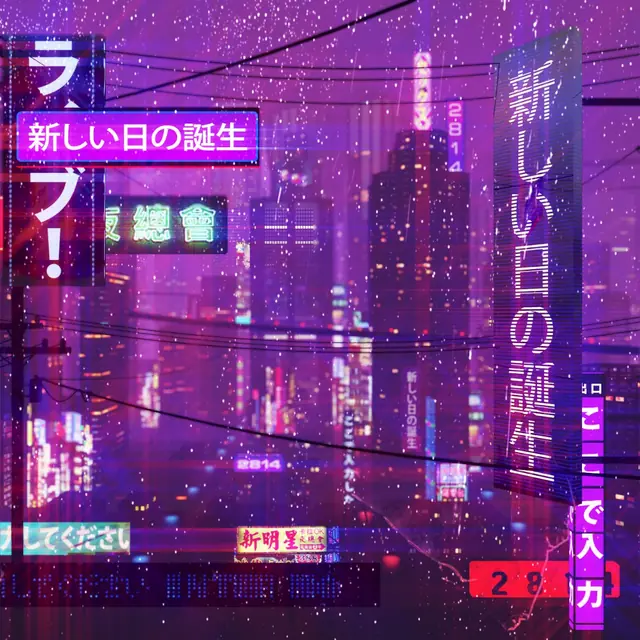
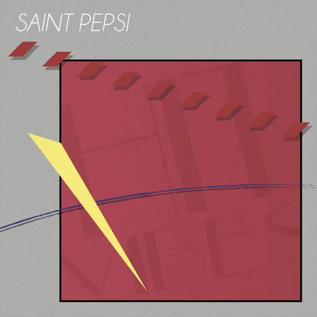
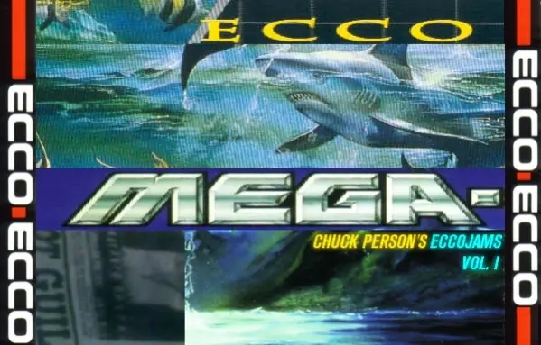
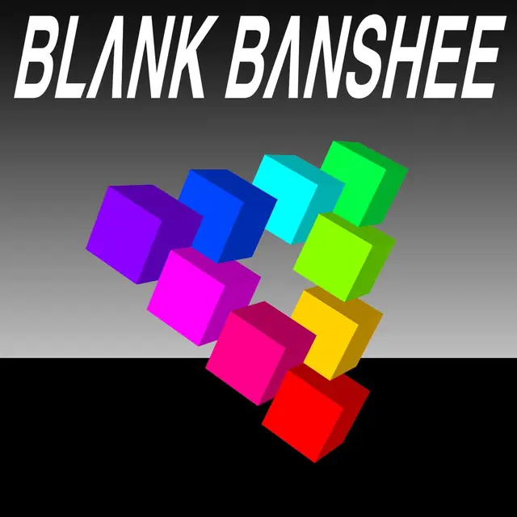
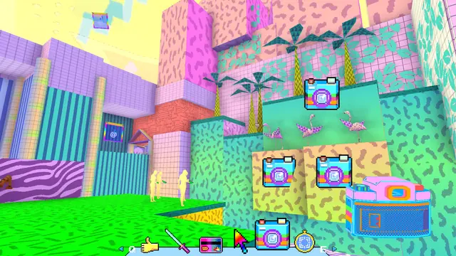
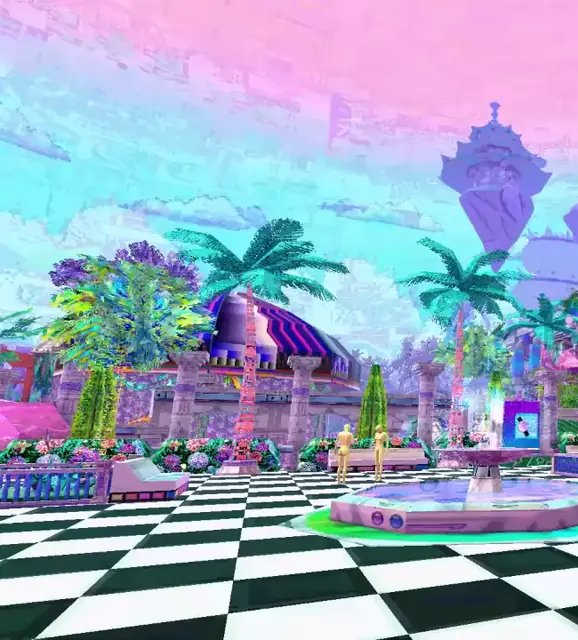
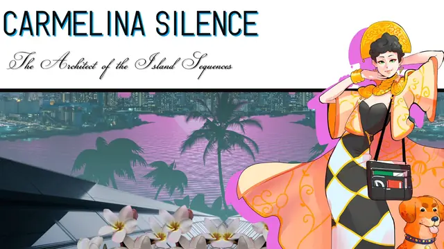
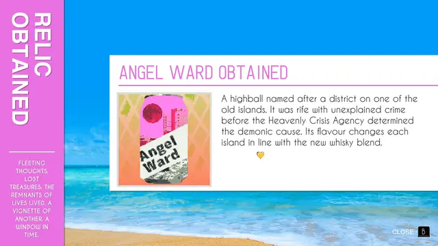
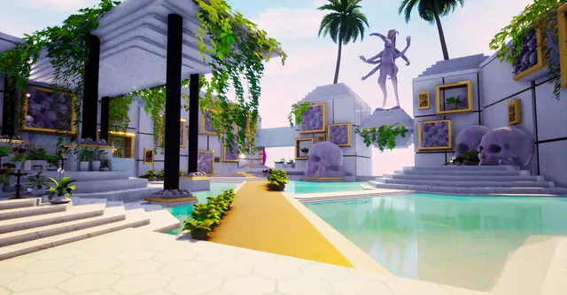
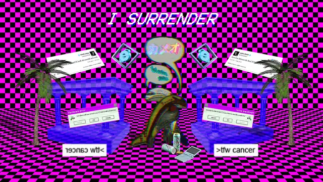
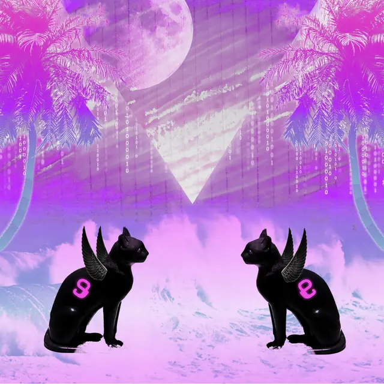
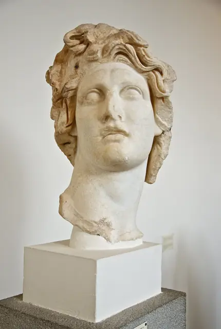
Games
- Broken Reality
A satire of consumer capitalism set inside the internet, where you climb the social ladder by collecting likes.15
- Hypnospace Outlaw
A study in jokes for dead interfaces, built on the 1990s dot-com dream of virtual utopias joined by information superhighways.16
- Paradise Killer
Study how it carries city pop covers, with their palms, waves and beach scenes, into its colour and its clean, bright UI.10
- Sunset Mall
Its developer calls it a vaporwave and mallsoft walking sim, set in a randomly generated 1990s shopping mall.17 Study how an empty mall carries the whole mood.
Film, art and more
- Floral Shoppe
Pixelated graphics, a Grecian bust, Japanese lettering and sickly sweet pink, parodied endlessly since.2
- Chuck Person's Eccojams Vol. 1
The 2010 tape that set the template most vaporwave producers followed.4
- Far Side Virtual
Planned as 16 ringtones,5 it began the squeaky-clean "utopian virtual" strand.4
- Memphis Group
A visual parallel for the squiggles and clashing laminates.
- Windows 95
One of the old technologies vaporwave art cites obsessively.3
Sources
- 1Comment: Vaporwave and the pop-art of the virtual plaza
- 2Vaporwave is Dead, Long Live Vaporwave
- 3Do You Want Vaporwave, or Do You Want the Truth? Cognitive Mapping of Late Capitalist Affect in the Virtual Lifeworld of Vaporwave
- 4Genre As Method: The Vaporwave Family Tree, From Eccojams to Hardvapour
- 5Adventures On The Far Side: An Interview With James Ferraro
- 6“Vaporwave Is (Not) a Critique of Capitalism”: Genre Work in An Online Music Scene
- 7Escaping Reality: the Iconography of Vaporwave
- 8Satisfaction Guaranteed: Techno-Orientalism in Vaporwave
- 9How to Make a Vaporwave Album Cover in Photoshop
- 10How a new indie studio created one of the best detective games ever
- 1198.css: A design system for building faithful recreations of old UIs
- 12Unicode Standard Annex #11: East Asian Width
- 13Change Speed and Pitch
- 14A Guide to Synthwave
- 15Broken Reality (24th Entertainment Division Jury Selections)
- 16Road to the IGF: Tholen, Lasch, Nelson Jr., and Cochran's Hypnospace Outlaw
- 17Sunset Mall